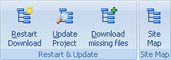
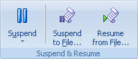

Используйте вкладку загрузка для старта/остановки загрузки Проектов.

Запуск - запускает загрузку выбранного Проекта или всех Проектов в выбранной папке. Используется настройка Проекта "Проверка изменения файлов" для обновления, загрузки всех или получения отсутствующих файлов.
Загрузить все - старт загрузки всех Проектов в Offline Explorer Pro. Предупреждение - это может вызвать временное зависание Offline Explorer Pro. Также, если у вас много Проектов, может потребоваться слишком много памяти, используемой Offline Explorer Pro.
Остановить - немедленное прекращение загрузки выбранного Проекта.
Остановить все - остановка всех активных загрузок.

Перезапустить закачку - старт загрузки выбранного Проекта с настройкой "Загружать все файлы" диалога Свойства Проекта (раздел проверка изменения файлов).
Обновить Проект - старт загрузки выбранного Проекта с настройкой "Загружать только новые или изменённые файлы" диалога Свойства Проекта (раздел проверка изменения файлов).
Загрузить отсутствующие файлы - старт загрузки выбранного Проекта с настройкой "Не загружать существующие файлы" диалога Свойства Проекта (раздел проверка изменения файлов).
Карта сайта - старт загрузки выбранного Проекта. Однако загруженные файлы не сохраняются на диск. Они используются только для того, чтобы создать структуру карты сайта.

Пауза - приостанавливает или возобновляет выполняющиеся загрузки. Это действие будет ожидать окончания загрузки всех загружающихся в текущий момент файлов и не будет начинать загрузку других файлов до вторичного нажатия кнопки. Смотрите раздел Загрузка для получения дополнительной информации.
Приостановить в файл - Приостановка любой активности загрузок в любое время, размещение состояния очереди загрузки в файл и остановка загрузок.
Resume from File - Возобновляет загрузки из файла предварительно сохранённого состояния очереди загрузки.